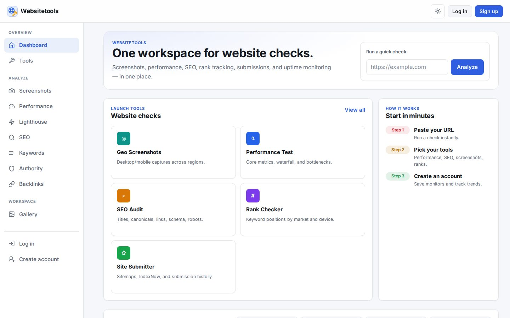
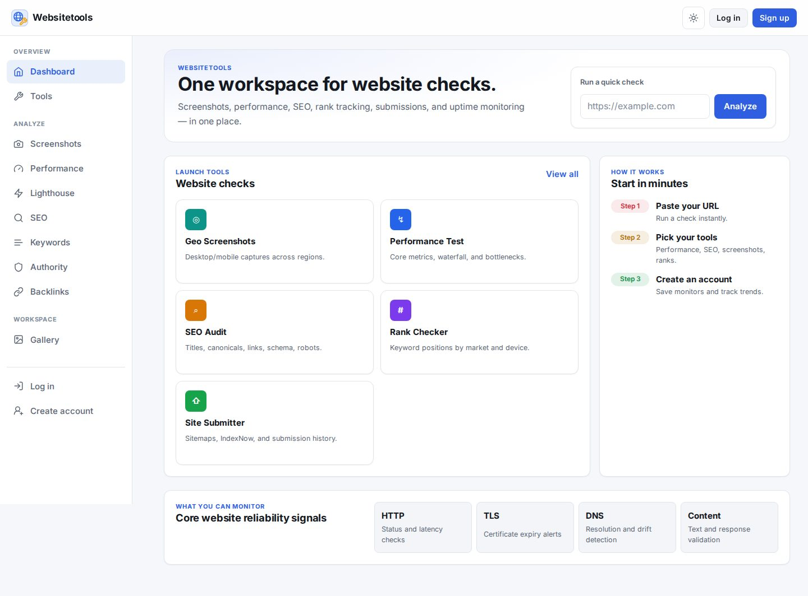
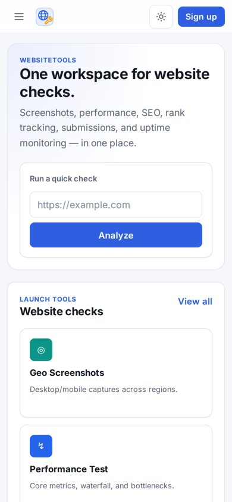

One workspace for website checks
Screenshots, performance, SEO, rank tracking, submissions and uptime monitoring in one place. Paste a URL, run a check instantly, then create an account to save monitors and track trends.

Geoscreenshots
Lighthouseperformance
SEOaudits
Uptimemonitoring
What WebsiteTools does
Geo screenshots
Desktop and mobile captures across regions.
Performance test
Core metrics, waterfall and bottlenecks, Lighthouse included.
SEO audit
Titles, canonicals, links, schema and robots.
Rank checker
Keyword positions by market and device; keywords, authority and backlinks.
Site submitter
Sitemaps, IndexNow and submission history.
Monitors
Checks run on your configured intervals with a status dashboard.
Screens

